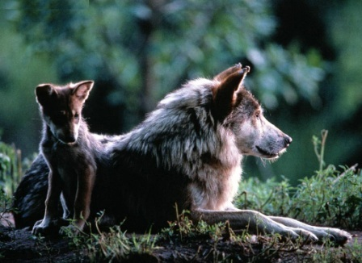

Reproducción de los lobos
La mayoría de los lobos estarán listos para reproducirse a los 2 años de edad, aunque esto no quiere decir que lo van a hacer, pueden pasar diez años antes de que realmente puedan aparearse.

Cuando se trata del apareamiento, sólo el macho líder y la hembra líder lo harán. Es por esto que a menudo es difícil obtener un número exacto de lobos. Una manada puede tener un máximo de veinte miembros, y sólo dos de ellos pueden realizar el proceso de reproducción.
Existen estudios que muestran que otros miembros en las manadas también se aparean entre sí, cuando hay suficiente comida, esto le ayuda a la manada a prosperar. Deben tener las condiciones exactas para que esto pueda ocurrir entre miembros no alfas de las manadas, aun no se entiende a la perfección este proceso.
Las investigaciones también muestran que cuando no hay suficiente comida, o cuando el área de para la manada es demasiado pequeña, el macho alfa y la hembra beta tampoco van a aparearse. Esto hace que los lobos de la manada no tengan que cuidar más que por sí mismos, ni tampoco tengan que compartir la comida con los cachorros. Como resultado, puede ser difícil conseguir aumentar el número de las especies de lobos en peligro de extinción.
El nacimiento de las crías va a depender de la región en donde viven estos animales, y puede ser en cualquier momento desde diciembre hasta marzo. Los lobos son los únicos caninos que sólo se aparean una vez al año, en lugar de dos veces. Las hembras cuidan a los cachorros durante unos dos meses después del parto. En general, tendrán que cuidar la camada de cuatro a seis meses hasta que los cachorros se valgan por si solos. Se ha observado que las madres pueden tener 14 cachorros a la misma vez.
La madre dará a luz a las crías sola, en su guarida, estas crías son pequeñas y vulnerables en el nacimiento. La madre loba les dará leche de su cuerpo durante el primer mes de vida, y después del primer mes saldrán de la madriguera con ella.
Al parecer los lobos se reproducen muy bien en cautiverio, también existen programas que están ayudando a estructurar el lugar de los machos y las hembras en las manadas, pues estos son la célula fundamental para asegurar el futuro de los lobos. Estos programas de reintroducción de lobos en sus hábitats ha sido un éxito para todas las especies.
Es responsabilidad de todos los lobos de la manada ayudar a aumentar la descendencia. Estos animales se turnan y cuidan de las crías mientras otros miembros salen a cazar, se aseguran que los cachorros coman para que se puedan desarrollar, y así la manada pueda prosperar.
Incluso cuando todo el grupo cuida de los cachorros menos de la mitad de las crías sobreviven el primer año, esto también dependerá de la alimentación de la madre durante del embarazo, si la madre no se alimentó bien durante el embarazo, las crías son demasiado pequeñas cuando nacen. La falta de alimentos para todo el grupo será un inconveniente para los cachorros.
Los cachorros de una manada de lobos tienen muchos privilegios, y son a menudo capaces de beneficiarse más que algunos adultos dentro de la manada con baja jerarquía.
Cuando los lobos tienen cerca de dos años maduran, y pueden ocurrir una de dos cosas, podrán realizar una escalada social dentro de su propia mandada o pueden dejar el grupo y formar el suyo propio, a menudo los machos dejan sus manadas, mientras que las hembras optan por quedarse en la misma donde han nacido.